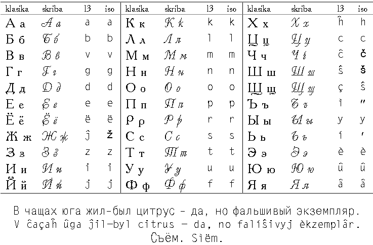
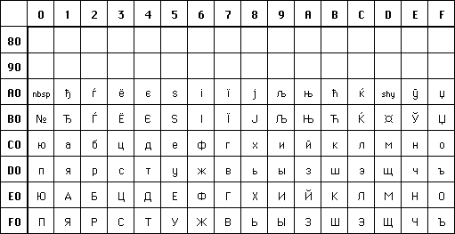

ISO 9-1986 (E). Documentation — Transliteration of Slavic Cyrillic characters into Latin characters. 1986-09-01.Ni ne povis konsulti ties duan eldonon:
ISO 9:1995 (E). Information and documentation — Transliteration of Slavic Cyrillic characters into Latin characters. — Slavic and non-Slavic languages. Edition: 2 (monolingual). — 13 p.En ĉi tiu verko ni uzas esence similan transskribon, adaptitan al la signaro Latina-3a. La ĉi-suba tabelo prezentas literojn rusajn en la klasika fasono, en kursivo, en nia transskribo per la Latina-3a (la kolumnoj «l3») kaj en la ISO-transskribo:

La teksto sub la tabelo konsistas el telegrafa testo, entenanta preskaŭ ĉiujn literojn rusajn, krom la literojn ë kaj ì (kiujn la telegrafo ial ignoras); ilin prezentas la sekva vorto (sìëm, «depreno»).
La rusaj esperantistoj plej ofte uzas pli fonetikan transskribon:
e=je ; ë=jo ; ç=ŝĉ ; ì=′ ; í=j ; è=e ; û=ju ; â=ja
Tio donas tre proksimuman ideon pri la fonetika valoro de la rusaj literoj (atentu, ke en tiu sistemo la litero «j» post konsonanto plej ofte indikas nur ties moligon: en Vanja, bitj, menju respondaj al niaj Vanâ, bití, menû, tute ne estas fonetika [j]; sed silabkomence «j» efektive estas prononcata: linija, jug — kp niajn liniâ, ûg).
Por ebligi la uzon de rusaj variablo-nomoj en ne-asimilita programlingvo mi iam proponis askiigon per nuraj literoj anglaj:
Pokrovskij S. B. Ob izobraĵenii russkiĥ tekstov latinskimi bukvami. // Programmirovanie. 1978. N-ro 1. P. 64-73.Tiu sistemo kunhavas la komunaĵon de la du supraj transskriboj, krom j. Por la prezento de la ceteraj literoj rusaj estas du stiloj: unu kompleta (dulitera), kaj unu reduktita (kunteksta). En la kompleta stilo la sekvaj kombinoj respondas transskriboj per la Latina-3a:

El ĉiuj kodoj por la literoj rusaj, la kodo KOI-8 estas la plej askieska: en ĝi la literoj rusaj okupas la kodpoziciojn, simetriajn al siaj ekvivalentoj latinaj (laŭ transskribo pola-germana); tamen la rusaj ĉefliteroj sekvas la etliterojn.
Ekz-e la rusaj аА havas la kodonon 16uC1, 16uE1 — kp la Askiajn Aa ĉe resp. 16u41, 16u61; la rusaj вВ situas ĉe 16uD7, 16uF7 — kp la Askiajn Ww (kun la aldono de la oka bito, t.e. plus 16u80). Tio neniel respondas al la ordo de la rusa alfabeta (la unua rusa litero en KOI-8 estas ne А sed ю), tamen eĉ post la amputo de la 8a bito la Askia teksto restas iel-tiel legebla. Ekz-e la ĉi-supra modela frazo iĝas
Tre kompletan TTT-paĝon http://www.nagual.pp.ru/~ache/koi8.html pri KOI-8 verkis angle Andrey A. Chernov (Andrej Ĉernov).
La ĉefaj normigaj dokumentoj pri KOI-8:
Testo pri maltranskribo (por la KOI8-reĝimo):
В чащах
юга жил-был цитрус — да, но фальшивый
экземпляр. Съём.
В ЧАЩАХ ЮГА ЖИЛ-БЫЛ ЦИТРУС — ДА, НО
ФАЛЬШИВЫЙ КЗЕМПЛЯР. СЪЁМ.
Vd ankaŭ http://www.friends-partners.org/friends/cyrillic/index.html.